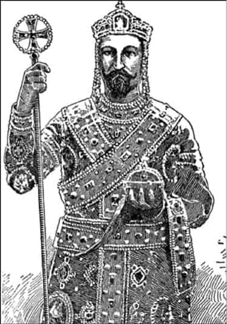
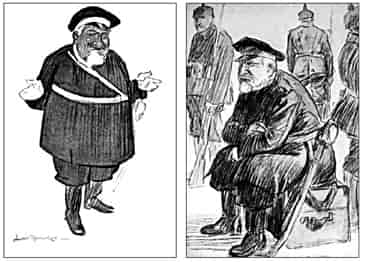
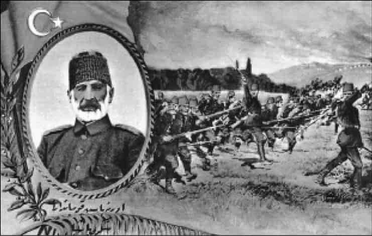
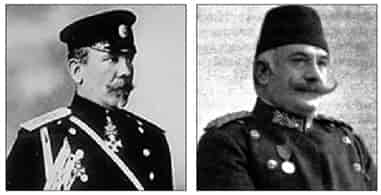
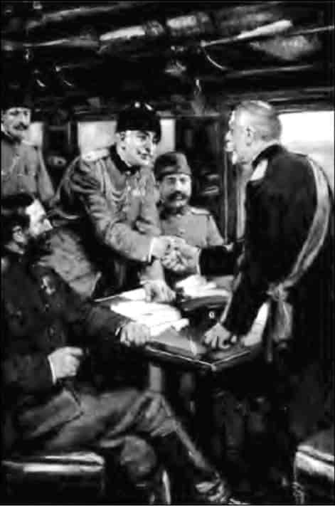
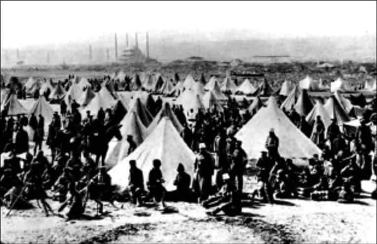
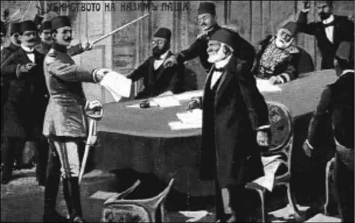
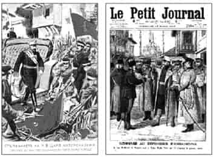
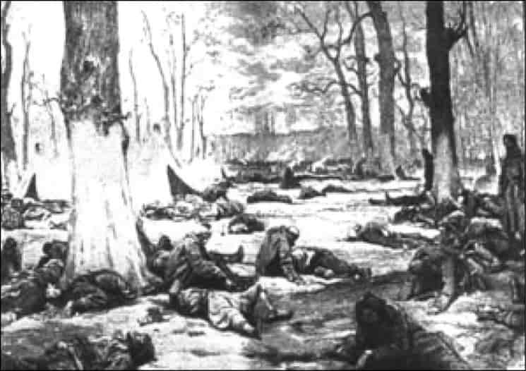

6

Edirne destanı
Bulgar ordusu Kırklareli ve Lüleburgaz savaşlarını kazanınca, Osmanlı ordusu İstanbul’un 20-30 kilometre batısındaki Çatalca’ya doğru çekilmeye başlamıştır. Top sesleri İstanbul’dan duyulur. Bu sırada utanç verici bir hadise daha olur: Rusya dahil, Avrupalı büyük devletler, 18 Ekim’de İstanbul’a savaş gemilerini gönderip karaya 2.250 asker çıkarırlar. Bulgarların yaklaşmasıyla şehirde bir kargaşa çıkabilir, öfkelenen Türkler azınlıklara, yabancı sefaret ve şirketlere saldırabilir gerekçesiyle!1
Halbuki İstanbul’da Türkler mağlubiyetin acısıyla üzgündür, yılgındır, sakindirler. Gayrimüslimler ise tam bir güvenlik içindedir, neşeleri de yerindedir. Hatta gazeteci Stephane Lauzanne’ın anlattığı gibi, Müslümanların acısına saygı duymadan, çalgılı gazinolarda, vals yaparak orkestra salonlarında eğleniyorlar. Dışarıda aç ve hasta göçmen kafileleriyle, sargılar içinde yaralı asker kafileleri salonlardan taşan bu orkestra sesleri arasında caddelerden, sokaklardan sessizce geçip gidiyorlardı. Stephane Lauzanne vicdanının isyan ettiği bu tabloyu kitabında sert dille eleştirir.2
İstanbul’da bulunan gazeteci Wilhelm Feldman da İstanbul’daki azınlıkların katliama uğrayacağı söylentilerinin yayıldığını, fakat bunun yalan olduğunu belirtir. Sokaklarda yoksul, çaresiz ve hasta göçmenlerle sargılar içinde bitkin ve yaralı askerlerin sel gibi aktığı bir sırada Pera semtindeki bu eğlenceleri eleştirir; hatta Türklerin mağlubiyetine sevindiklerini açıkça dile getiren Rumlar olduğunu anlatır.3

Bizans imparatorlarının tören kıyafetiyle
Bulgar Kralı Ferdinand.
Bunlar gerçektir; Balkan Harbi’nden itibaren Türklerde de milliyetçilik fikrinin doğmasına yol açan olgulardan biridir. Fakat aşırı genelleme yapmak doğru değildir, zira göreceğiz, Balkan Savaşı’na katılan ve birçoğu hayatını kaybeden Hıristiyan ve Musevi Osmanlı vatandaşlarına haksızlık olur.
Ordu Bulgarlar karşısında bu şekilde mağlup düşerek Çatalca hattına çekilince, artık Doğu Rumeli’de, Trakya’da Türk bayrağının dalgalandığı bir tek yer kalmıştır: Kahramanca direnen Edirne!
Bulgar ordusunun ve kralının bir gözü Çargrad dedikleri İstanbul, öbür gözü Edirne üzerindedir. Bulgar Kralı ya da Çarı Ferdinand, büyük bir tantanayla, Çatalca önlerindeki Bulgar ordusunu teftiş etti. Kendisini Bizans’ın vârisi gibi gördüğü için, gözü Ayasofya’dadır. Alman asıllı Bulgar Çarı Ferdinand, Bizans imparatoru kıyafetiyle portrelerini yaptıran tuhaf bir adamdır.4
Sürekli askeri üniforma giyen Ferdinand’ın Çatalca önlerinde söylediği şu sözü ünlüdür:
Önümde bir Çatalca çiti kalmıştır, onu da bir tekmede yıkacağım. Ayasofya’da muhteşem bir dini törene hazır olun!5
Hatırlayacaksınız, Ferdinand Balkan Savaşı’nı Haç’ın Hilal’e karşı savaşı olarak görüyordu. Osmanlı İmparatorluğu’na savaş ilan ederken, Bulgar milletini Slav kardeşliği ve Ortodoks Hıristiyanlık için Hilal’e karşı silah altına çağırdığını söylemişti. Tarihçi Richard Hall, Çar Ferdinand’ı karikatüre ya da çizgi film karakterlerine benzetir:

Karikatürlerde Bulgar Kralı Ferdinand.
Richard Hall: Küçük Kral isimli eski bir çizgi film karakterine çok benziyor aslında. Kısa ve oldukça kiloluydu, enteresan bir sakal kesimi vardı, çizgi filmdeki krala çok benziyordu. Ama Ferdinand’ın bütün bu olaylardaki rolü zamanla negatif bir hal aldı. Zaten etnik olarak Bulgar değildi. Alman ve Fransız karışımıydı. Annesi Fransız Louis Philippe’in kızıydı. Ama o yine de kendini milliyetçi bir Bulgar olarak tanımlardı. Bulgar askerlerinden bile daha milliyetçiydi. Kendini çok üstün ve güçlü görürdü. Bizans imparatoru kıyafetiyle portrelerini yaptırmıştı. İşte Bulgar ordusunun fazla motive olmasının sebeplerinden biri de bu olabilir. Belki bu sebepten güçlerinin ötesine geçmek, Çargrad dedikleri İstanbul’u almaya çalışmak falan istemişlerdi.
Çar Ferdinand’ın gözü İstanbul’da olsa da, Bulgar ordusu Çatalca’da durdurulmuştur.
Çatalca’ya 30 kilometre mesafedeki İstanbul’dan trenle mühimmat ve gıda takviyesi gelmektedir. Anadolu’dan asker getirilmiş, ordu mevcudu 100.000’e, top sayısı 280’e çıkarılmıştır.6 Çatalca hattında mevzilenen Bulgar ordusunun mevcudu yine 100.000, top sayısı 150’dir, fakat Bulgar ordusu yorgundur ve ikmal merkezinden, Sofya’dan uzaklaşmıştır.7
Osmanlı ordusu toparlanmış, kendine gelmiş, disiplin sağlanmıştır. Kahramanlık ruhunu uyandırmak için askerin dini duygularına özel önem verilmektedir. Başkumandanlık, askere dini öğütler verilmesi ve subayların erlerle birlikte cemaatle namaz kılmaları gibi konulara ağırlık verdi. Görevlendirilen din adamları en ileri mevzilerde siperleri dolaşarak askere moral verdiler.8
Kumanova’da, Yenice’de, Kırklareli ve Lüleburgaz’da bozguna uğrayan, silahını bırakıp kaçan ordu, Çatalca’da disiplinli, savaşkan, inançlı bir ordu haline gelmiştir.
Richard Hall: Çatalca’ya kadar ordu tamamen enkaz halindeydi, emir kumanda mekanizması falan kalmamıştı. Bu ordu Çatalca’da oldukça iyi bir şekilde toparlandı. Anadolu’dan yeni askerler getirildi, bunlar orduya katıldı. Çatalca’yı kaybetmek İstanbul’u da ebediyen kaybetmek olabilirdi, o zaman ortaya bambaşka bir tablo çıkabilirdi. Böylece, Jön ya da Genç Türkler’in yapmak istedikleri bir şeyin ilk başlangıcı Çatalca’da oluştu: Yeni bir kimlik, Türk kimliği... Çatalca’nın Osmanlı tarafında bu gelişmeler olurken, öbür tarafta Bulgar ordusu yorulmuştu, ikmal merkezlerinden çok uzaklaşmıştı ve hastaydı: kolera!.. Bütün bunlar Osmanlı zaferini sağladı Çatalca’da.
Çatalca hattında Osmanlı ordusunun bir avantajı daha vardır, Marmara ve Karadeniz’deki Osmanlı savaş gemileri, özellikle Barbaros Hayreddin zırhlısı uzun menzilli toplarıyla Bulgar mevzilerini dövmektedir. Bu hayli etkili oldu. Kumanova’da, Yenice’de, Kırklareli ve Lüleburgaz’da bozguna uğrayan ordu, Çatalca’da kendine geldi, toparlandı, maneviyatı da düzeldi ve zafer kazandı. Tarihçi Richard Hall, “Genç Türklerin Savaşçı ruhu”9 diyor buna, Çatalca’da uyandı bu ruh. Çanakkale ve Sakarya’da devam edecektir.
Çatalca hattındaki en büyük bela koleradır. Kolera ve salgın hastalıklardan hayatını kaybeden asker sayısı 3.303’tür.10 Fakat Çatalca savaşında kolera ve diğer salgın hastalıklara karşı sahra hastaneleri ve karantina merkezleri kuruldu. 16 bin asker bu hastanelerde, 10 bine yakın asker de trenlerle gönderildikleri İstanbul hastanelerinde tedavi edildi. Gelecek bölümde göreceğiz, Türk kadını Balkan Savaşı sırasında hastanelerde gönüllü hastabakıcılık yaptı, toplumsal hayata katıldı. Hilal-i Ahmer (Kızılay) en büyük atılımını Balkan Savaşı’nda yaptı.

Edirne’nin kahraman müdafii Şükrü Paşa.
Edirne ve Şükrü Paşa
Bulgarlar Çatalca’yı geçemeyecektir. Fakat bütün Trakya Bulgar işgali altındadır. Bir tek yerde Türk bayrağı dalgalanmaya devam etmektedir: Edirne... Şükrü Paşa kumandasında Edirne kahramanca bir savunma savaşı yapmaktadır. Balkan Harbi’nde Doğu cephesinde bir “Plevne”, bir Gazi Osman Paşa varsa, o Edirne’dir ve Şükrü Paşa’dır.
Bülent Atalay: Şükrü Paşa 1857 Erzurum doğumludur. Tam bir dadaştır, kelimenin tam anlamıyla. Küçük yaşta babasını kaybeder. Annesi ikinci evliliği yaptığı için bunu hazmedemez, tahammül edemez, anacığını paylaşamaz bir başkasıyla, ailesinden uzaklaşır. İstanbul’a gelir ve eğitimine devam eder. Çok seçkin bir kurmay olur, mareşalliğe kadar yükselir. Ancak 1908’den sonra rütbelerle ilgili yapılan bir tadilatla ordu içerisinde mareşallik unvanı elinden alınır, yani kanun gereği. Şükrü Paşa da buna bir tepki göstermemiştir. Bu uygulama özel bir muamele değildir kendisine. Ancak tarihin yetiştirdiği en büyük Türk kahramanlarından biridir. 1877-78 Osmanlı-Rus Savaşı’nda Plevne kahramanı olarak nasıl Osman Paşa’yı biliyorsak, genç kuşaklara aktarıyorsak, mutlaka Şükrü Paşa da unutulmamalı, unutturulmamalıdır. Kendisi bir Edirne müdafii olarak tarihte yerini almıştır.
Topçu Tümgeneral Şükrü Paşa 10 Ekim’de, yani Bulgar taarruzundan bir hafta önce atandığı Edirne’ye gelerek Müstahkem Mevki Kumandanlığı’na başladı. Müstahkem mevki, Yanya ve İşkodra gibi saldırıya, kuşatmaya karşı tahkim edilmiş yerdir. Yani, siperler kazılmış, koruganlar ve sığınaklar yapılmış, cephane ve gıda depolanmış, toplar yerleştirilmiştir. Edirne öteden beri böyle tahkim edilmiştir. Fakat savunma için zaruri olan uzun menzilli toplar, Balkan Savaşı’ndan önce Çanakkale, Selanik ve İzmir’e götürülmüştü; Libya savaşında bir İtalyan deniz taarruzu ihtimaline karşı.
Selanik’teki toplar Yunanistan’ın eline geçecek, Çanakkale ve İzmir’deki toplar da Edirne’ye getirilemeyecekti. Halbuki Edirne’yi kuşatan Bulgar ordusunun en güçlü tarafı, topçusudur.
Osmanlı’nın hükümet ve idare mekanizması felç olduğu için seferberlik planları nasıl uygulanamadıysa, Edirne’ye de ilave bir takviye yapılamamıştı. Halbuki Bulgarların temel hedeflerinden birinin Edirne’yi almak olduğu biliniyordu. Bulgaristan’la savaşın başlamasından üç hafta önce, 24 Eylül 1912’de Osmanlı’nın Sofya elçiliğinden gelen telgrafta Bulgarların saldırıya hazırlandığı bildirilerek şu uyarılar yapılmıştı:
● Bulgarların ilk amacı Osmanlı’nın güçsüz Kırklareli tümenidir, bu tümen acilen güçlendirilmelidir.
● Bulgarlar Edirne’ye baskın taarruzu düşünüyor, Edirne müstahkem mevkii takviye edilmeli, vatani hizmet süresi dolan askerler terhis edilmemelidir...
Demek ki, en azından 24 Eylül’de bu durum öğrenildiği halde, 8 Ekim’de sadrazam Ahmet Muhtar Paşa başkanlığında toplanan bakanlar kurulunda durum vahimdir. Genelkurmay Başkan Vekili Hadi Paşa, bu toplantıda şöyle konuştu:
Edirne kalesine henüz bir damla erzak gönderilemedi. Sayıştay’ın vize muamelesine tabi olduğu için işlemlerde müşkülat [zorluk] çekiyoruz!11
Görüyor musunuz, savaş kapıya dayanmış, ordu Sayıştay vizesiyle uğraşıyor!

Bulgar ordularının başkumandanı General Savof ve Osmanlı ordularının
başkumandanı Nazım Paşa.
Nazım Paşa ve Mihail Savof
Hadi Paşa konuşmasının devamında, İstanbul’da depolarda bir kat bile asker elbisesi bulunmadığını, parası verildiği halde günde 1.000 kattan fazla asker elbisesi dikilemeyeceğini de anlatır. Gerçekten sivil günlük kıyafetiyle birçok insan, tren istasyonlarında “Allah’ını seven Edirne’ye” diye bağırarak toplanıp asker olarak Edirne’ye gönderilecekti!12
Hadi Paşa’nın son sözü şudur:
Ordunun hazırlanması belki bir ila bir buçuk ayda mümkün olur!13
Aynı toplantıda Başkumandan Vekili Nazım Paşa ise, ordunun savaşa hazır olduğunu söylüyor, taarruz stratejisi uygulamasını istiyor! Osmanlı ordusunun başındaki Nazım Paşa ile Bulgar ordusunun başındaki General Savof’u mukayese etmek hem iki ordunun harbe hazırlık derecesini hem sevk ve idare kalitesi arasındaki farkı gösterir.
Richard Hall: Bulgar Başkumandanı Mihail Savof çok daha iyi eğitimli, daha motive bir askerdi. Nazım Paşa ise daha çok “politikacı asker”di.
Milli Mücadele liderlerinden Kâzım Karabekir Paşa, o sırada Edirne’de kurmay binbaşıdır; 10. Tümen’in kurmay başkanıdır. Yaşadıklarını günlüğüne yazmıştır.
Barış zamanında hazırlanan seferberlik planlarının kâğıt üzerinde kaldığını anlatan Karabekir, bazen Edirne’ye gönderilmesi gereken birliklerin başka yere gittiğini, bazı birliklerin de Edirne’ye yanlışlıkla geldiğini anlatır. Bu durum garnizonlar arasında yeni yazışmalar gerektirir. Karabekir şöyle devam ediyor:
Topçu için İstanbul’dan gönderileceği seferberlik planında yazılı olan 16 kadanadan hiçbiri gelmedi. Ne topçuya, ne sıhhiye bölüğüne, ne de tümene Edirne vilayeti dışından ne bir nefer ne de bir nakliye aracı geldi...
Elbisesiz gelen erler en büyük sıkıntıydı. Erlerin büyük kısmı silah doldurmaktan âciz olduğu için savaş ilanına kadar hudut boylarında da eğitimle uğraşıldı.14
Bu belgeseli/kitabı hazırlamak için, Edirne’de Küçük Tepe mevkiinde şimdi müze olan Şükrü Paşa’nın karargâhını gezdik. Dışarıdan bakıldığında, toprak örtülü tümsekler... Kim bilir kaç bin top mermisi düşmüştü buralara... İçine girdiğimizde kubbe ve kemerlerle örülmüş, sığınaklar, dar koridorlar, düşmanın top ve kurşun atışlarına karşı, çok dar yapılmış küçük gözetleme ve ışık pencereleri...
Şükrü Paşa’nın maiyetinin ve askerlerinin yattığı ranzalar...
Bölümleri birbirine bağlayan, sıçanyolu denilen dehlizler...
Ortaçağ zindanlarını andıran bu loş, rutubetli dehlizlerde ve odalarda Şükrü Paşa ve maiyeti Edirne’yi kahramanca savundular.
Fransız Matin gazetesinin muhabiri gazeteci Gustave Cirilli Edirne savunmasına tanık olmuştur. Bulgar topçusunun Edirne şehrini ve askeri mevzileri korkunç bir bomba yağmuruna maruz bıraktığını anlatırken bunun “gözü dönmüş, amansız ve insanlık dışı” bir bombardıman olduğunu belirtir.15
Edirne’yi savunmak
Başkumandanlığın Şükrü Paşa’ya savaş planında verdiği görev, Edirne’yi 50 gün savunmasıdır. Bu, 50 günde Bulgar ordusunun püskürtüleceği veya İstanbul’dan Edirne’ye takviye gönderileceği düşüncesine dayanmaktaydı. Halbuki, 28 Ekim’de Lüleburgaz muharebesini kaybeden Osmanlı ordusu Çatalca’ya çekilmeye başladı ve Edirne 29 Ekim’den itibaren tamamen kuşatma altında kaldı. 50 gün dayanması istenen kahraman Şükrü Paşa ve askerleri ile Edirne halkı, açlıktan bitkin düşünceye kadar tam 160 gün kahramanca direndiler.
Osmanlı’nın Edirne vilayeti çok geniştir, Makedonya’nın da bir kısmını içine alır. Vilayet nüfusu 1 milyon 427 bindir. Bunun 760 bini, yüzde 53’ü Türk’tür. 396 bini, yüzde 28’i Rum’dur. 171 bini, yüzde 12’si Bulgar, yüzde 7’si Yahudi ve diğer gayrimüslimlerdir.16
Fakat Edirne şehri, Edirne müstahkem mevkii içindeki nüfus 120.000’dir. Dağılımı aşağı yukarı benzer şekildedir, yalnız Bulgarlar Edirne’de Yahudilerden az, küçük bir azınlıktır.17 Osmanlı hükümeti Edirne’de bir miktar erzak stokunun mevcut bulunduğunu ve savaşın iki ay süreceğini düşünerek, 40 bin kişiye iki aylık yeni erzak alım bedeli olarak bütçeden 4.900 Osmanlı lirası ödenek göndermişti. Halbuki savaş iki ay değil, beş buçuk ay sürecekti. Dahası, Kırklareli ve Lüleburgaz bozgunu üzerine Trakya halkının bir kısmı İstanbul’a, bir kısmı da Edirne’ye sığınmış, askerle birlikte Edirne’nin nüfusu 120.000’den 172.000’e çıkmıştı!18
Şükrü Paşa göreve gelir gelmez Edirne’den her türlü yiyecek maddesinin çıkarılmasını yasaklamış, yakın köylerdeki peynir stoklarına ve ambarlardaki tahıla parası karşılığında el koymuştu. Tüketimi kısıtlamak için de hemen karne uygulamasına geçmişti.
Fakat bunlar çözüm olmayacak, Edirne sürekli açlık çekecektir. Tuz bile kalmamıştır. Edirne’de bulunan Kurmay Binbaşı Kâzım Karabekir, günlüklerinde ekmeğe, saman ve kum karıştırıldığını belirtir. Şükrü Paşa askerlere konferanslar verdiriyor, şanlı Plevne direnişini anlatıyor. Yetersiz beslenerek de kahramanlık yapılabileceğini söylüyor.
İstanbul’la haberleşme radyo frekansıyla yapılıyor. Her defasında İstanbul, “Biraz daha direnin” demekten başka bir şey yapamıyor. Şubat ayında artık kötü beslenme açlığa dönüşmeye başlamıştır.
Bülent Atalay: Bu derme çatma karargâh olarak bilinen binanın önünde kara kazanlar vardır, varillerin bölünüp parçalanıp ikiye ayrılıp oluşturulduğu kazanlar... Bu kazanın başında, üç beş asker kazanı karıştırmaktadırlar. Merakla gelir bakar, içi su dolu ve sadece mısır koçanlarından oluşan bir yemek, artık adına ne diyeceksek, kaynatmaktadırlar ve bunu yiyeceklerdir.
Tarihçi Richard Hall’un deyimiyle, Edirne’ye Bulgar topçusu “ateş yağdırmaya” bütün şiddetiyle devam ederken, aç ve bîilaç direnen Edirne’nin yüreğini adeta kerpetenle büken acı bir olay meydana geldi...
Bulgarlara trenler dolusu erzak
Edirne’de Karaağaç istasyonundan geçen tren, Sofya’dan Çatalca önlerindeki Bulgar ordusuna erzak götürecek, fakat aynı trenle Osmanlı açlık çeken Edirne’ye bir çuval un bile gönderemeyecektir!
Açlık içinde kıvranan Edirneliler ve Edirne’deki askerler, ağzına kadar gıda ve sağlık malzemesi dolu Bulgar trenlerini derin bir hüzün içinde seyredeceklerdir!
Çünkü Nazım Paşa’nın imzaladığı Çatalca ateşkesinde böyle bir hüküm vardır.
Bu acı olayı biraz açalım.
Bulgarlar 17 Kasım sabahı Çatalca hattında büyük bir taarruza kalktılar ve 18 Kasım’da büyük bir yenilgiye uğradılar. Osmanlı ordusu bu defa kahramanca savaşmış, Osmanlı donanması denizden Bulgar ordusuna bomba yağdırmıştı. Ayrıca Bulgar ordusunda da kolera ortaya çıkmıştı. Dahası, Bulgar ordusu böyle Çatalca hattını ve Edirne’yi kilitlemişken, Yunan ve Sırp orduları Makedonya’yı ele geçiriyordu. Çar Ferdinand artık Ayasofya’da ayin yapmayı unutmuştu. Bütün bunlar Bulgarları mütareke istemeye yöneltti.
Osmanlı tarafı zaten mütareke istiyordu.
Görüşmeler 28 Kasım’da başladı.
Osmanlı delegasyonu üç kişiydi: Başkumandan Vekili ve Harbiye Nazırı Nazım Paşa, Ticaret ve Ziraat Nazırı Reşit Paşa, Kurmay Albay Ali Rıza Bey...
Bulgar delegasyonu: Meclis Başkanı Danef, Başkumandan Vekili General Savof ve Genelkurmay Başkanı General Fiçev.
Bulgarlar Sırbistan ve Karadağ adına da imzaya yetkilidir.
Yunanlar gelecekler, adaları isteyecekler ve verilmeyince gideceklerdir.
3 Aralık 1912 günü Osmanlı ile Bulgaristan ve Sırbistan arasında mütareke, ateşkes imzalandı. Buna göre, barış görüşmeleri Londra’da başlayacaktı. Barış yapılamazsa taraflar on gün önce haber vererek savaşa yeniden başlayacaktı.
Ateşkesin en önemli ve en acı maddesi 7. maddedir. Buna göre, Osmanlı donanması Karadeniz’deki Bulgar limanlarına uyguladığı ambargoyu kaldıracak, Bulgaristan bu limanlarını serbestçe kullanacaktı. Dahası, Çatalca önlerindeki Bulgar ordusuna yiyecek ve sağlık malzemesi götürecek olan Bulgar trenlerinin Edirne’den geçmesine Osmanlı izin verecekti!
Ama buna karşılık Osmanlı, direnmekte olan müstahkem mevkilere, Yanya’ya, İşkodra’ya ve Edirne’ye hiçbir şekilde yiyecek gönderemeyecekti!

Nazım Paşa solunda oturan Reşit Paşa’nın
itirazına rağmen mütarekeyi imzalayarak
Bulgar General Savof’la tokalaşıyor.
Evet, korkunç derecede adaletsiz bir ateşkes!
Buna sinirlenen Ticaret ve Ziraat Nazırı Reşit Paşa, General Savof’a çıkıştı:
Öyleyse biz de sizin deniz ve demiryollarından gıda maddeleri geçirmenize izin vermeyiz!
Reşit Paşa elbette haklıdır. Fakat General Savof’un cevabı ağırdır:
Mağluplar daima galiplere kolaylık gösterir!
Reşit Paşa direndi fakat Nazım Paşa General Savof’un elini sıkarak imzayı bastı! Edirne’den geçen trenler Bulgar ordusuna erzak taşıyacak, fakat Osmanlı Edirne’ye bir çuval un, bir torba tuz bile gönderemeyecekti!
Nazım Paşa’nın bu imzasıyla 3 Aralık’ta Yunanistan hariç, silahlar sustu fakat Edirne daha sıkıntılı bir döneme girdi. Bulgar bayraklarıyla donatılmış ilk trenle Bulgar Çarı Ferdinand, muzafferane Edirne’den geçerek Çatalca’daki ordusunu kutlamaya gitti. Ardından Edirne’den vızır vızır geçen trenler, Çatalca’daki Bulgar ordusuna vagonlar dolusu gıda maddesi taşıdı. Kışta kıyamette, açlık içinde direnen Edirne halkı ve askerler bu trenleri seyrettikçe bir kere daha kahroldular!
İhanet mi, cehalet mi, güçsüzlük mü?
Edirne savunmasında Kurmay Binbaşı olarak bulunan Kâzım Karabekir, 12 Aralık tarihli günlüğünde, bütün Edirne’nin en fazla 20 günlük ekmeğinin kaldığını, günlük peynirin 20 grama indirildiğini, buna karşılık, erzak dolu Bulgar trenlerinin Edirne’den geçtiğini yazdı. Şu satırlar Kâzım Karabekir’e aittir:
İhanet mi, cehalet mi yoksa kuvvetsizliğe mi Edirne kurban gidecek?!19
Ateşkesin bu maddesini Nazım Paşa’nın kabul etmesi ihanet mi, cehalet mi yoksa kuvvetsizlikten miydi?
Size nasıl geliyor, hangisinden acaba?
Nazım Paşa’ya göre, Çatalca’da Osmanlı topçusunun üç günlük mermisi kalmıştı. Ateşkes yapılmazsa İstanbul düşebilirdi! Yine Nazım Paşa’ya göre Edirne’de yiyecek sıkıntısı vardı ama Edirne’nin bir Bulgar hücumunda düşmesi ihtimali daha yüksekti. Onun için bu tren rezaletine rağmen ateşkesi imzalamıştı. Bunu yazan tarihçiler, Nazım Paşa’nın Çatalca’da ateşkes imzalayıp bir an önce İstanbul’a gelerek siyasi entrikalarına devam etmek için acele ettiğini de belirtirler.20
Çatalca’da top mermisinin tükenmek üzere olduğu doğrudur. Tarihçi Hikmet Bayur, bunu doğrulayan bir bakanlar kurulu tutanağının bulunduğundan bahseder.21
Nazım Paşa, İttihatçılarla Halaskâr Zabitan denilen askeri grup arasında entrikalar çevirerek sadrazam olmak istemektedir. Richard Hall’un belirttiği gibi bir “politikacı asker” tipidir.
Şunu da belirtelim; Kâmil Paşa hükümeti, Çatalca’daki savaşı sürdürmenin mümkün olup olmadığını Genelkurmay Başkanı Ahmet İzzet Paşa’ya sormuş, o da bu konuda teminat verememişti.22 Çatalca’da o uğursuz maddenin altına atılan imzanın temel sebebi, bu güçsüzlüktür.
Bulgar delegasyonu ateşkes müzakereleri sırasında çok diplomatik entrika yaptı. Ateşkesin Edirne’yle ilgili şartlarını Edirne’de görüşürken de çok entrika yaptılar; Edirne’yi teslim almak ve ondan sonra ateşkes imzalamak için bir tasarı sundular!.. Edirne’deki görüşmeleri yürüten Kurmay Binbaşı Kâzım Karabekir, Şükrü Paşa’nın verdiği yetkiyle, Bulgar tasarısını yırttı ve görüşmelere son verdi. Şükrü Paşa, oyun yapmalarından şüphelendiği Bulgar heyetinin hareketlerine karşı, kendi deyişiyle, “Osmanlılık ve Türklük şanına layık bir şekilde karşılık verilmesini” emretmişti. Edirne, ateşkes görüşmelerinde de dik durmuş, fakat sorunda tabii Çatalca’da imzalanan ateşkese uymuştur.23
Ateşkes gereğince, 16 Aralık’ta Londra’da, Saint James Sarayı’nda İngiliz Dışişleri Bakanı Sir Edward Grey’in gözetiminde barış görüşmeleri başladı. 1878’de Berlin Antlaşması’nı imzalamış altı büyük devlet, İngiltere, Rusya, Almanya, Fransa, İtalya ve Avusturya da kendi aralarında görüşmelere başladılar.
Osmanlı Devleti’nin askeri mağlubiyet, iktisadi gerilik ve çok-uluslu yapısı gibi sebeplerle ne kadar zor bir durumda olduğunu belirtmek için Londra Konferansı’ndaki Nicolson’un bir sözünü buraya almak istiyorum. Nicolson, İngiliz Dışişleri Bakanlığı Müsteşarıdır ve 28 Aralık 1912 günü Londra’da Osmanlı Büyükelçisi Tevfik Paşa’ya şunu söylemiştir:
Barış görüşmelerinin kesilmesinden çekinmelisiniz. Mali sıkıntınız var, ordunuz devleti kurtaracak durumda değildir. Savaş yeniden başlarsa Doğu Anadolu’da ve Suriye’de çıkabilecek olaylar Asya’da da varlığınızı tehlikeye düşürebilir.24
Nicolson’un bahsettiği Doğu Anadolu’da çıkacak olaylar Ermeni meselesiyle, Suriye’dekiler ise Arap milliyetçiliğiyle ilgilidir. Balkanlar’dan sonra Batı Anadolu’nun Yunanistan’a, Doğu Anadolu’nun kurulacak Ermenistan’a verilmesi endişesi Milli Mücadele sonuna kadar devam edecektir.
“Hükümet Edirne’yi gözden çıkardı”
Londra görüşmeleri sürerken Edirne’nin durumu gittikçe kötüleşmektedir. 26 Aralık’ta Kâzım Karabekir günlüğüne “Hükümet Edirne’yi gözden çıkardı” diye yazar. Karabekir’in 5 Ocak 1913 günlü notunda derin bir hüzünle şu satırlar okunuyor:
Bir taraftan Bulgar erzak trenleri geçiyor, bizim de iki haftalık erzakımız var.
Artık ekmeğe ince kum ve ot katılarak askere dağıtılıyor. Bazı otlar zehirli olduğu için hastalık ve ölümler oluyor.
16 Ocak 1913’te Başkumandan Vekili Nazım Paşa, Edirne Müstahkem Mevkii Kumandanı Şükrü Paşa’ya şu korkunç telgrafı çekiyor:
Büyük devletlerin, Edirne’yi Bulgarlara terk etmemizi isteyecekleri anlaşılıyor. Hükümetimizin mali durumu çok kötü olduğu gibi Çatalca’daki kuvvetlerimiz de düşmana nazaran düşük düzeydedir. Bir ay daha erzak için gayret ve fedakârlık gösterilirse Edirnemizin belki kurtarılacağı ümit olunmakta!25
Başkumandan böyle deyince insanda moral mi kalır?! Ama hayır, Şükrü Paşa bir kahramandır ve askerine de bu ruhu vermektedir. Edirne’de bulunan Fransız Matin gazetesi muhabiri Gustave Cirilli Edirne’de ekmek tayınının 75 grama düşürüldüğü dönemi anlatır. “Top mermileri şehrin üstüne yağmur gibi yağıyordu” diye yazar. Bütün bunlara rağmen Şükrü Paşa’nın “Takdir Allah’ındır” diye konuştuğunu, kanının “son damlasına kadar dayanma düşüncesinin bir nebze bile yumuşamadığını” anlatır. Gazeteci Cirilli’ye göre, askerleri, kumandanları Şükrü Paşa’ya hayrandır.26

Edirne’yi kuşatan Bulgar ordusundan bir fotoğraf, arkada Selimiye Camii görülüyor.
Balkan Harbi’nde bozgundan bozguna koşan ordu, Fevzi Çakmak’ın belirttiği gibi, iyi kumandanlar elinde kahramanlık destanları yazmıştır: Yanya’da Esat Paşa, İşkodra’da Ali Rıza Paşa, Edirne’de Şükrü Paşa böyledir.
Erzurumlu Şükrü Paşa, Edirne’de kahramanca çarpıştığı Küçüktepe’ye defnedilmesini vasiyet etmişti. 50 gün direnmesi istenirken 160 gün süreyle hiçbir takviye almadan kahramanca savunduğu Edirne’de, karargâhını konuşlandırdığı Küçüktepe’de Şükrü Paşa’nın anıtmezarı ve bir heykeli bulunmaktadır.
Belgesel hazırlığı sırasında arkadaşım Reyhan Yıldız ve CNN Türk ekibiyle Şükrü Paşa’nın mezarına ve heykeline gittik. Mezar taşında Şükrü Paşa’nın, yağmur gibi yağan top gülleleri altında askerlerine söylediği sözleri yazılıdır:
Düşman, hatları geçtikten sonra ölürsem kendimi şehit kabul etmiyorum. Beni mezara koymayın. Etimi itler ve kuşlar çeke çeke yesinler. Fakat müdafaa hattımız bozulmadan şehit olursam kefenim, lifim, sabunum çantamdadır. Beni bu mahalle gömeceksiniz ve gelen nesiller üzerime bir abide dikeceklerdir.
Şükrü Paşa 1912.
İngiltere: “Edirne’yi bırakın!”
Başkumandan Vekili Nazım Paşa bile Edirne’nin kurtarılamayacağına inanmıştı. Sadrazam Kâmil Paşa hükümeti ne yapabilirdi?
Londra’da toplantı halindeki Büyük Devletler bu sırada Osmanlı’ya bir nota verdiler; özeti şöyle: Edirne Bulgaristan’a bırakılacak, Çatalca’nın 30 kilometre ötesindeki Midye ve Enez kasabaları arasında çekilecek çizgi sınır olacaktır. (Midye-Enez hattı için 167. sayfadaki haritaya bakınız.)
Ege adaları mı? O konuda Büyük Devletler karar verecek!
Balkan Savaşı çıktığı sırada sadrazam olan Mahmut Muhtar Paşa, üst üste gelen yenilgiler üzerine, ihtiyar yaşında ihtirasla sarıldığı koltuğu istemeye istemeye bırakarak mecburen istifa etmek zorunda kalmıştı.27 Yerine 29 Ekim 1912’de yine 80 yaşındaki Kâmil Paşa sadrazam atanmıştı. İngiltere’ye yakın bilinen Kâmil Paşa İngiltere’den umduğu desteği bulamamıştır. Ya bu noktada öngörülen şartları kabul edecekti ya da savaş yeniden başlayacaktı.
İngiliz Dışişleri Bakanı Edward Grey’in, İstanbul’daki İngiliz büyükelçisine gönderdiği mektuptaki şu satırlar, İngiltere’nin o sırada takip ettiği politikanın net bir anlatımıdır:
Osmanlı Büyükelçisi Reşit Paşa ile görüştüm. Türklere İstanbul’u kurtarmak istiyorlarsa Edirne’yi vermeleri gerektiğini ve bir savaş durumunda her şeyi kaybedebileceklerini söyledim. Bütün sözlerim boşunaydı. Reşit Paşa Osmanlı delegasyonunun konferansı terk edebileceğini iletti.28
Kuşatma ve bombardıman altındaki Edirne günden güne zayıflıyor, Büyük Devletler Londra’da Edirne’yi terk etmesi için Osmanlı İmparatorluğu’na baskı yapıyor.
Böyle felaketli bir dönemde Sadrazam Kâmil Paşa şöyle bir formül düşündü: Edirne, Müslüman vali yönetiminde bağımsız ve tarafsız bir devlet olacak; Osmanlı, Büyük Devletler’in notasındaki diğer şartları kabul edecek... Yani adalardan vazgeçilecek, Trakya’da sınır Midye-Enez çizgisi olacak.
Kâmil Paşa’nın umudu, ileride Balkan devletlerinin kendi aralarında savaşa tutuşması, ancak o zaman Edirne’nin Osmanlı ordusu tarafından kurtarılabileceğidir. Bu siyasi bir kehanetti adeta.29 Gerçekleşecekti, fakat altı ay sonra...
Darbe toplantıları
Edirne’nin kaybedilmekte olduğunu gören İttihatçılar, Edirne’yi kurtarmak için Kâmil Paşa hükümetini bir darbeyle düşürmeyi düşündüler. 21 Ocak akşamı Beşezade Emin Bey’in Vefa’daki evinde bir toplantı yaptılar. Katılanlar şu isimlerdir: Talat (Paşa), Sait Halim Paşa, Hacı Adil, Ziya Gökalp, Binbaşı İsmail Hakkı, Kurmay Binbaşı Fethi (Okyar), Mithat Şükrü, Yarbay Cemal (Paşa), Dr. Nazım, Kara Kemal, Mustafa Necip...
Dikkat, Enver yok...
Her zaman meşruiyetçi bir liberal olan Fethi Bey darbe fikrine şiddetle karşı çıktı. Darbeyi yapacak olan Yarbay Enver yoldaydı, toplantıya yetişememişti. Talat Bey de fazla konuşmadı, dağıldılar.30 Ertesi gün, yani 22 Ocak’ta Yarbay Enver geldi ve Talat’la darbe planlarını yapmaya başladılar.
22 Ocak’ta Dolmabahçe Sarayı’nda Saltanat Şûrası toplandı. Şûrada savaşa devam edilmesini isteyen birkaç kişi dışında herkes, savaşı sürdürmenin mümkün olmadığını söyleyerek barış yapılmasını istedi. Bu, Kâmil Paşa hükümetinin “bağımsız Edirne” formülü karşılığında Midye-Enez hattını kabul etmesi demekti.
Şûra toplantısı İttihatçılarda “Hükümet Edirne’yi düşmana teslim ediyor” kanaatini güçlendirdi, Talat ve Enver darbenin 23 Ocak’ta yapılmasına karar verdiler.
Babıâli Baskını
Bütün Rumeli’nin ardından Edirne’nin de kaybedilmekte olduğunu herkes görüyor. İttihat ve Terakki, Kâmil Paşa hükümetinin Edirne’yi düşmana terk ettiğini düşünüyor. Bu yönde propaganda yapıyor. Öyleyse Kâmil Paşa hükümetini devirmek, iktidarı ele almak lazımdır! İttihatçıların temel düşüncesi bu!
Meselenin iç politika tarafı da vardır. Kâmil Paşa hükümeti, bozgunculuk yapıyorlar suçlamasıyla birçok İttihatçıyı tutuklamıştır. Talat ve Enver’i de tutuklamak istiyordu. Fakat Talat Bey, Başkumandan Vekili Nazım Paşa’ya sadrazamlık teklif etmişti, bu bir taktikti! Buna inanan Nazım Paşa, daha fazla İttihatçının tutuklanmasını engelledi. Hatta İstanbul’da birkaç kritik askeri göreve İttihatçı subayları atadı; bu şekilde Cemal Bey (Paşa) İstanbul polisine, Enver Bey kolorduya hâkim hale geldi.31
İttihatçılar bu sayede darbe yapabileceklerdir.
23 Ocak 1913 Perşembe, tarihimizin en önemli günlerinden biridir. Kâmil Paşa, Londra’ya verilecek cevabı görüşmek için kabineyi toplamıştır. O zaman Babıâli yani Başbakanlık binası, bugünkü İstanbul valilik binasıdır.
Aynı gün Talat ve Enver darbeyi planlamıştır; darbe gün ortasında, o zaman Babıâli denilen Başbakanlık binasını basarak yapılacaktır. Enver baskını yapmak üzere sokağa çıkmadan önce, Alman kadın arkadaşına şu mektubu yazdı:
Sevgili dostum, bugün ne olacağını bilmiyorum. Dün hükümetin sarayda topladığı meclis [Saltanat Şûrası], 60 memur ve âyan [senato] üyesi oybirliğiyle bir karar aldılar: Harpten kaçınmak. Böylece kendi tedbirlerimi almaktan başka yapacak şeyim yok, yani hükümeti düşürmek ve fikrimi yeni bir hükümete kabul ettirmek. Her şey şimdiden hazır.
Eğer bu, memleketimi kurtaracaksa mutlu oluruz. Ölürsem vazifemi yapmış kabul ederim kendimi. Allah’a dua ediyorum, eğer projem Türkiye’ye mutluluk getirmezse, beni öldürmesi için dua ediyorum. Allah sizi korusun, ata binmem lazım, beni bekliyorlar.32
Yarbay Enver Bey mektubu bitirince dışarı çıkıp bekletilen beyaz ata biner. Cağaloğlu’ndan Babıâli’ye doğru ilerler. Etrafında sayısı 30-40 kişiyi geçmeyen33 bir kalabalık vardır. Bunlar Yakup Cemil, Sapancalı Hakkı, Mümtaz, Mustafa Necip gibi fedai ya da silahşor denilen silahlı İttihatçılarla, biraz da sıradan meraklı insanlardır. “Milli Hatip” Ömer Naci, “Vatan! Edirne!” diye bağırarak ateşli konuşmalar yapıyor. Meraklılar arttıkça kalabalık 200-300 kişiye ulaşır. Babıâli binasına gelindiğinde Enver atından iner. Muhafız bölüğünün kumandanı zaten iki gün önce değiştirilmiş, bir İttihatçı getirilmiştir. Mukavemet olmaz.
Enver ve silahşorlar içeriye daldı. Cam çerçeve kırıldı, bağrış çağrışlar oldu. Silahşorlardan Mustafa Necip kendilerini engellemek isteyen bir komiseri tabancayla öldürdü. Gürültüler üzerine kabine toplantısından dışarı çıkan Nazım Paşa, anlaştığını zannettiği İttihatçıların bu hareketine tepki gösterdi, ünlü silahşor Yakup Cemil tabancasının mermilerini Nazım Paşa’nın üstüne boşalttı. Enver Bakanlar Kurulu odasına girdi, elinde tabanca, 80 yaşındaki sadrazama yüksek sesle hitap etti:

Batı basınında Enver Bey’in Sadrazam Kâmil Paşa’dan istifasını almasını tasvir eden
temsili resimler yayımlandı.
Millet sizi istemiyor, istifa edin!
Kâmil Paşa sakin bir şekilde eline kalemi aldı, “cihet-i askeriyeden gelen teklif üzerine istifa” ettiğini yazdı. Enver müdahale etti, “cihet-i askeriye ve ahali” yani halk diye yazdırdı:
Padişah hazretlerinin yüce huzurlarına,
Ahali ve cihet-i askeriyeden vuku bulan teklif üzerine huzur-u şahanelerine istifaname-i âcizanemin arzına mecbur olduğum yüksek malumlarınız olduğunda bu konuda ve bütün hallerde emrü ferman padişah efendimizindir.
10 Ekim 1912 Sadrazam Kâmil.34
Cihet-i askeriye bu İttihatçı silahşorlardır, halk ise dışarıdaki birkaç yüz kişilik meraklı ve fedai grubudur!
İstifayı alan Enver otomobille Dolmabahçe’ye giderek Sultan Reşad’dan Mahmut Şevket Paşa’yı sadrazam olarak atamasını istedi. Biliyorsunuz, Mahmut Şevket Paşa, 31 Mart Olayı üzerine Selanik’ten İstanbul’a gelen Hareket Ordusu’nun ünlü kumandanıdır. Tabii padişah Mahmut Şevket Paşa’nın sadrazam olmasını kabul etti. İttihatçılara hayır deme gücü yoktu. İttihatçılar tekrar iktidara gelmişlerdi. Talat Bey, daha yeni hükümet kurulmadan kendisini Dahiliye Nezareti Vekili “İçişleri Bakanı Vekili” ilan ederek, hükümetin değiştiğini telgrafla vilayetlere ve askeri birliklere tebliğ etti.35
Enver, 25 Ocak’ta Alman kadın arkadaşına postaladığı mektupta “darbe çeyrek saatte olup bitti” diye yazdı. Darbe sırasındaki “maalesef” ölümler olduğunu, bunun kendi darbe planında bulunmadığını, “kendisine rağmen ve arzusu hilafına olduğunu” kaydetti, darbe için “umut ederim memleketime mutluluk getirir” dileğinde bulundu.36
Öldürülen Nazım Paşa yerine, Genelkurmay Başkanı Ahmet İzzet Paşa başkumandan vekili yapıldı. Sadrazam Mahmut Şevket Paşa, harbiye nazırlığını da üstüne aldı. Dikkat çekici bir husus, hariciye nazırlığı görevinden Gabriel Noradungyan Efendi’nin uzaklaştırılması, bu görevin eski Atina Büyükelçisi Ahmet Muhtar Bey’e verilmesidir. Mahmut Şevket Paşa hükümetinde iki Ermeni bakan vardır: Nafıa Nazırı (Bayındırlık Bakanı) Beserya Efendi ile Posta Telgraf Bakanı Oskan Efendi.
İttihatçılar da Edirne’yi kurtaramıyor
Mahmut Şevket Paşa tam bir İttihatçı değildir. Hatta sadrazam olmadan önceki dönemde, İttihatçıların orduyla ilişkisini kesmek, orduyu siyaset dışı tutmak istemişti. Fakat İttihatçı değilse de, Mahmut Şevket Paşa’nın İttihatçı eğilimlere sahip olduğu bilinmektedir ve kurduğu hükümet ağırlıklı olarak İttihatçı bakanlardan oluşmaktadır.37
Mahmut Şevket Paşa hükümetiyle İttihat ve Terakki, artık iktidarı denetim altına almıştır.
Önceki hükümetler İttihatçıları tutuklamıştı, Mahmut Şevket Paşa hükümeti de önde gelen muhalifleri tutuklamaya, yurtdışına sürmeye başladı.
Bunca felaket, birbirine düşmandan daha kötü gözle bakan politikacıları bir araya getirmeye yetmemişti! İktidarı alan, muhaliflerini ezmeye kalkışıyordu; Rumeli kan ve ateşle elden giderken!
Darbe niye yapılmış, yeni hükümet niye kurulmuştu? Edirne’yi vermemek için... Halk sokakta “Mahmut Şevket Paşa, Edirnemizi kurtar” diye nümayiş yapıyordu. Mahmut Şevket Paşa hükümeti, Büyük Devletler’in 17 Ocak tarihli notasına 30 Ocak’ta cevap verdi ve “Edirne’nin Meriç Nehri’nin sağ kıyısına düşen şehir kısmını bırakmaya razı olduğunu” bildirdi! Ege adalarından Boğazlar’a ve Anadolu kıyılarına yakın olanlar Osmanlı’da kalmalı, ayrıca kapitülasyonlar hiç olmazsa hafifletilmeliydi.38
Balkan devletleri bunu kabul etmedi. Büyük Devletler kendi aralarında görüş birliğine varamadılar. Bulgar Başkumandanı General Savof savaşın 3 Şubat’ta başlayacağını bildirdi, o gün Bulgarlar Edirne’ye ağır bir bombardıman yaptılar.
Ertesi gün Çatalca hattı boyunca büyük bir taarruz başlattılar. 13 gün boyunca çok kanlı çarpışmalar oldu. Harbiye talebeleri cepheye gönderildi. Muazzam bir kahramanlık gösterdiler. Bu muharebelerin yapıldığı Harbiye tabyası, askeri tarihimize bir kahramanlık destanı olarak geçti.39
Bu kahraman çocuklar, Çanakkale’nin, Sakarya’nın genç subayları olacaktır; şehit düşecekler, gazi olacaklar, bayrağı indirmeyeceklerdir.
Bulgarlar ağır zayiat verdiler. Çatalca’da yenilen Bulgarlar Makedonya’da Sırp ve Yunan tehdidiyle karşı karşıya idiler. Fakat Osmanlı da Çatalca’nın bir adım ötesine geçemiyor, bırakın Edirne’yi kurtarmayı, gıda yardımı bile yapamıyordu...
8 Şubat’ta yeni bir teşebbüs yapıldı. 10. Kolordu Marmara Denizi’nden Şarköy’e asker çıkaracak, donanma da Bulgar mevzilerini bombalayacaktı. Aynı anda Bolayır’daki Mürettep Kolordu da harekete geçecek, birlikte taarruz yapacaklardı. Karşılarındaki Bulgar 4. Kolordusu ile çarpışarak Edirne’ye ulaşacaklar, en azından Edirne kuşatması zaafa uğrayacaktı. Bu iyi düşünülmüş harekâta önayak olan, Albay Enver Bey’dir. Trablusgarp’tan dönen Kurmay Binbaşı Mustafa Kemal Gelibolu’daki Mürettep Kolordu’nun harekât şube müdürüdür. Harekât iyi düşünülmüştü fakat iyi koordine edilemedi, iyi yönetilemedi. Başarısız oldu. Tarihçiler Mustafa Kemal’in iki yıl sonraki Anafartalar savaşının stajını bu Gelibolu harekâtında yaptığını yazıyor.40
Askeri açıdan Edirne’yi kurtarma ihtimali artık kalmamıştı. İttihatçılar da Edirne’den umut kesiyorlardı. Sadrazam Mahmut Şevket Paşa, Edirne’den vazgeçmeyi düşündüklerini Alman ve Fransız büyükelçilerine çıtlatmıştı bile! Edirne’nin kurtarılamayacağı anlaşılmıştı. 23 Şubat’ta yani Babıâli baskınından tam bir ay sonra, İttihatçıların kurduğu Mahmut Şevket Paşa hükümeti Edirne’den vazgeçmeyi kabul ettiğini bildirerek Büyük Devletler’in barış için aracı olması istedi!41
Yakup Kadri Karaosmanoğlu durumu şöyle anlatır:
Mahmut Şevket Paşa hükümeti de tıpkı Kâmil Paşa hükümeti gibi, Avrupa devlet merkezlerine birtakım adamlar göndererek sulh dileniyordu.
Yine Yakup Kadri, Mahmut Şevket Paşa hükümetinin Avrupa’da daha soğuk karşılandığını belirtir.42 Darbe, Avrupa’da kötü bir izlenim bırakmıştı.
Ve... 6 Mart’ta, geçen bölümlerde gördüğümüz gibi, Yanya düştü... Sıra Edirne’ye gelmişti.
Edirne düşüyor!
Edirne’de erzak tükendikçe aç kalan hayvanlar ölmeden kesilerek askerin yemeğinde kullanıldı. Köylerde bol miktarda peynir yapıldığı için, ordunun ihtiyacı için el konulan peynir tenekelerindeki sular tuz yerine kullanılmaya başlanmıştı. Böyle bir günde, Kurmay Binbaşı Kâzım Karabekir’in Edirne Hatıraları’nda 18 Mart 1913 günü şu notu okuyoruz:
Erlerin kuvve-i maneviyesi sağlam. Üç yüz gram ete pek memnunlar. Peynir suyuyla gayet lezzetli et pişiriyorlar. Bazı yeşil ot ve kök de toplayarak peynir suyuyla pişiriyorlar, bu da iyi oluyor. Üç yüz gram kumlu, çöplü ekmek için hep bir ağızdan “Allah devlete, millete zeval vermesin, Edirne’yi kurtaralım da bu ekmek bize yeter, buna da şükürler olsun” diye dua ediyorlar.
Karabekir’in yazdığı gibi kumlu ekmeğe şükreden “bu biçarelerin vücutları pek zayıftı, kulakları şeffafa yakın bir hal almıştı, bir vazifeye giderken çok döküntü veriyorlar”dı. İstanbul bir kere daha süreyi uzatmış, Edirne’nin 25 Mart’a kadar direnmesini istemişti; İstanbul’un beklentisi, o vakte kadar Büyük Devletler’in müdahalesiyle barışın imzalanmasıydı. Bu, Edirne’de son takatleriyle direnmeye çalışan kahramanlara da bir umut vermişti.43
Halbuki...
Edirne’yi bir türlü alamayan Bulgar ordusu, Sırplardan yardım istemiş, General Stephanovic kumandasında 20.000 kişilik Sırp kuvveti, kale kuşatmalarında kullanılan ağır toplarıyla birlikte Edirne önlerine gelmişti. Edirne’nin düşmesinde bu ağır topların büyük rolü oldu.44
Edirne savaşında Bulgarlar uçak kullandılar, uçakla keşif yaptılar, topçuları ona göre mermi yağdırdı. Propaganda bildirileri attılar. Şükrü Paşa’nın Bulgar topçusunun yerlerini tespit etmek için istediği uçağı İstanbul bir türlü gönderemedi. Kale açlıktan bitkin düştüğünde, yenilen otların zehirli olmasından ve koleradan ölümler de başladı. 25 Mart’ta Bulgarlar yaptıkları hücumla Edirne’nin doğu cephesindeki mevzilere girdiler. Edirne’nin dayanacak gücü kalmamıştı. Şükrü Paşa bütün sancakları toplattırdı, gözyaşları arasında yaktırdı; düşmanın eline geçip aşağılanmasın diye. Yine düşmanın eline geçmesin diye önemli evrakı ve dürbünler dahil bütün askeri malzemeleri de tahrip ettirdi. Bütün subaylar kılıçlarını kırdılar. Ve Şükrü Paşa şerefli bir şekilde teslim antlaşmasını imzaladı, 26 Mart’ta Bulgar kuvvetleri Edirne’ye girmeye başladılar.45
27 Mart’ta Çar Ferdinand zafer alayı ile Edirne’ye geldi. Şükrü Paşa, hakarete uğramamaları için bütün sancakları toplattırıp yaktırdığı halde, Bulgar milliyetçileri, Ferdinand Türk sancaklarını çiğneyerek Edirne’ye girmiş gibi poster ve kartpostallar yayımladı.
Türk tarafı, aşağılayıcı bir muameleye maruz kalmamak için bütün kılıçlarını kırdığı halde, Avrupa basınında Şükrü Paşa’yı kılıcını Kral Ferdinand’a teslim ederken gösteren çizim resimler yayımlandı. Bulgarlar da fotomontaj tekniğiyle Şükrü Paşa’ya kılıcını iade eden “âlicenap Bulgar kralı” fotoğrafını kartpostal haline getirdiler.46
Fransız gazeteci Gustave Cirilli, “Yeni Sezar” dediği Ferdinand’ı gayrimüslimlerin “sevinç çığlıkları ve alkışlarla karşıladığını” ve üç gün boyunca Türk evlerinin “vahşice” yağmalandığını yazar. Bulgarlar Edirne’de fes giyilmesini, Türkçe tabela kullanılmasını yasakladılar, tabelaların Bulgarca olması zorunluluğunu koydular. Cirilli, Edirne’de “kılıç rejimi” kurulduğunu belirtir.47
Edirne de artık “Bulgar şehri” haline getirilmek isteniyor, “homojenleştirme” politikası yani...
Çar Ferdinand, Şükrü Paşa’ya saygılı davrandı. Şükrü Paşa ve esir alınan Türk subayları Sofya’ya götürüldü. Savaşa binbaşı olarak katılan General Ali Remzi Yiğitgüden, sonradan yazdığı kitapta, Bulgarların ve Sırpların esir Türk subaylarına “oldukça medeni” şekilde davrandıklarını yazar. Fakat esir erlere çok kötü davrandıklarını, büyük çapta dövme, öldürme olayları olduğunu da belirtir.48
Edirne çarpışmaları sırasında Türk ordusunun verdiği şehit sayısı 13 binden aşağı değildir. Edirne 53 bin kişilik bir kuvvetle savunulduğuna göre zayiat oranı yüzde 25’e yakındır. Bulgar ve Sırp kuvvetlerinin zayiatı ise 17 bin kişidir. Edirne’yi 160 bin kişilik bir kuvvetle kuşattıklarına göre zayiat oranı yüzde 10’dan biraz fazladır.49
Sarayiçi faciası
Edirne’nin düşmesiyle yaşanan en büyük facia, 15 bin Türk askerinin Sarayiçi mevkiine kapatılarak açlıktan ölmeye terk edilmeleridir. Sarayiçi dahil, Eskizağra’da, Serez’de, Tunca adasında açlıktan ölen veya kurşunla öldürülen Türk askerlerinin sayısı 35 bin civarındadır.50
Amerikan Carnegie Vakfı’nın Balkanlar’a gönderdiği araştırma komisyonunun 1914’te yayımladığı raporda da Tunca adası ve Sarayiçi mevkiinde Türk esirlerin ağaç gövdelerini kemirerek açlıktan öldüğü anlatılır. Tunca adasındaki ağaçların kabukları soyulmuş resmi de raporda yer alıyor. General Vasof, Bulgar askerlerinin ekmeğinin dörtte birinin Türk askerlerine verilmesini emretmiş, fakat bu ölümlere mâni olmamıştır. Raporda açlıktan kıvranan bu insanların gece soğukta, yağmur altında bakımsız kaldıkları, acılar içinde hayatlarını kaybettikleri anlatılıyor.51

Bulgar propagandası: Şükrü Paşa Bulgarların eline geçmemesi için bütün sancakları
toplayıp yaktığı ve bütün kılıçları toplayıp kırdırdığı halde Bulgar propagandası
Ferdinand’ı Türk bayrağını çiğneyerek Edirne’ye girerken ve Şükrü Paşa’yı
Ferdinand’a kılıcını teslim ederken gösteren posterler düzenledi.
Fotomontaj resimler yayınladı.
Sarayiçi’nde açlıktan şehit düşen
Mehmetçikler
Balkan Savaşı’nda yaşadığımız en büyük facialardan biri Edirne’nin Sarayiçi denilen mevkiinde askerlerimizin açlıktan ağaçların kabuklarını, köklerini kemire kemire şehit düşmeleridir.
Fransız L’Illustration dergisi Sarayiçi mevkiinde ağaç gövdelerini kemirerek açlıktan şehit düşen Türk askerlerinin resmini yayımlamıştır.
Bulgarlar askerlerimizi izole etmişlerdi, dışarıdan yardım ve gıda alamayan, Bulgarlar tarafından da bilerek aç bırakılan askerlerimiz şehit düştüler. Şimdi burası ormanlık bir mesire ve Balkan şehitleri için dikilmiş çeşitli anıtlar var. Bu anıtlardan en önemlisi Sarayiçi mevkiinde acı şekilde şehit düşen askerlerimiz için 1993 yılında Kültür Bakanlığı’nın diktiği anıttır.
Bu anıtın çevresindeki kitabelerde, şehit düşen askerlerimizden bir bölümünün ismi yazılıdır. Vatanın her yerinden Mehmet’ler yatıyor burada. Birkaç örnek:

Ressam Georges Scott tarafından Sarayiçi’ndeki açlıktan ölümler görülerek çizilen resim
L’Illustration dergisinin 19 Nisan 1913 tarihli sayısında yayımlandı.
Müslüm oğlu Halil 21 yaşında Iğdır doğumlu... Hıdır oğlu Yusuf 19 yaşında Diyarbakır doğumlu... Edhem oğlu Yavuz 19 yaşında Diyarbakır doğumlu... Niyazi oğlu Hüsrev 19 yaşında Diyarbakır doğumlu... Cabbar oğlu Şehmuz 19 yaşında Diyarbakır doğumlu... Dede oğlu Ömer 21 yaşında Isparta doğumlu... Satılmış oğlu Ömer 21 yaşında İzmir doğumlu... Ömer oğlu Sedat 22 yaşında İzmir doğumlu... Mehmet oğlu Yusuf 21 yaşında Kırıkkale doğumlu... Abdi oğlu Mehmet 21 yaşında Ordu doğumlu... Hıdır oğlu Yusuf 22 yaşında Rize doğumlu... Temel oğlu Nuri 18 yaşında Rize doğumlu...
Hatip oğlu Abdüllatif 24 yaşında Şırnak doğumlu... Memiş oğlu Nuri 21 yaşında Trabzon doğumlu... Salih oğlu Rahmi 18 yaşında Tunceli doğumlu... Aziz oğlu Hamit 23 yaşında Yozgat doğumlu...
Kitabede Mehmet Âkif’in Çanakkale şiirinden bir bölüm de yer alıyor:
Sana dar gelmeyecek makberi kimler kazsın
Gömelim gel seni tarihe desem sığmazsın
Ey şehid oğlu şehit isteme benden makber
Sana âğûşunu açmış duruyor Peygamber
26 Mart 1913’te Bulgar askeri birlikleri Edirne’ye girmişti. Mondros Mütarekesi’nden sonra da Yunan askeri birlikleri Edirne’ye girecektir! Balkan Savaşı’nda Edirne nasıl kurtarıldı? Çatalca’ya kadar çekildiğimize göre, bugünkü Trakya sınırımız sonra nasıl çizildi? Edirne’nin kurtuluşunu, Balkan Harbi’nin son safhasını gelecek bölümde göreceğiz.
1. İsmail Hami Danişmend, İzahlı Osmanlı Tarihi Kronolojisi, cilt 4, s. 390.
2. Stephane Lauzanne, Uçurumun Kenarındaki Türkiye, s. 55-56.
3. Wilhelm Feldman, İstanbul’da Savaş Günleri, Selis Kitaplar, İstanbul 2004, s. 51-62.
4. Richard Hall, Balkan Savaşları, s. 46.
5. Celal Bayar, Ben de Yazdım, cilt 3, s. 947; Rıza Nur Aksun, Osmanlı Tarihi, cilt 5, s. 491.
6. Richard Hall, a.g.e., s. 109.
7. Albay Ahmet Tetik, Balkan Savaşı’nda Mürettep 1. Kolordunun Harekâtı, Genelkurmay Yayınları, Ankara 2006, s. 34.
8. Genelkurmay Başkanlığı, Türk Silahlı Kuvvetleri Tarihi, Balkan Harbi, Şark Ordusu, II. cilt, 1. Kitap, Birinci Çatalca Muharebesi, Ankara 1993, s. 31, 298.
9. Richard Hall, a.g.e., s. 109.
10. a.g.e., s. 294.
11. Abdullah Paşa, 1328 Balkan Harbi’nde Şark Ordusu Kumandanı Abdullah Paşa’nın Balkan Harbi Hatıratı, DYB Yayınları, İstanbul, 2012, s. 90; Hikmet Bayur, a.g.e., II/1, s. 387. (Metinde tabii Sayıştay yerine Divan-ı Muhasebat denilmektedir.)
12. Tümgen. Ali Remzi Yiğitgüden, Balkan Savaşı’nda Edirne Kale Muharebeleri, yay. haz. Zekeriya Türkmen vb., Ankara 2006, s. 29.
13. Abdullah Paşa ve Hikmet Bayur, aynı yerler.
14. Kâzım Karabekir, Edirne Hatıraları, Yapı Kredi Yayınları, İstanbul 2009, s. 27-29. “Elbisesiz gelen erler en büyük müşkilatı mucip oluyordu. Erlerin büyük kısmı silah doldurmaktan âciz olduğu için savaş ilanına kadar hudut boylarında da talim ve terbiye ile uğraşıldı... Vakt-i hazarda nizamiye efradının bile ne çanta ve ne de portatif çadırı vardı. İlan-ı harp günü bile bunların tevziatı bitmedi ve tabii bu yabancı bütün efradı çok sıktı. Hülasa seferberlik planına nazaran, tümenimiz yedinci günde seferberliğini bitirecek yerde on altıncı gün olduğu halde hâlâ tamam mevcuda ulaşamadık. Her müfrezeye civar köylerde buldukları nakliye araçlarından istifade etmeleri emri verilmesiyle nakil araçlarımızı kısmen ikmal de ettiğimiz halde.” (s. 27-29)
15. Richard Hall, a.g.e., s. 115, 201.
16. Justin McCarthy, Ölüm ve Sürgün, s. 144.
17. Edirne’de şehir nüfusu “100.000’den fazla”dır. Bunun 55.000’i Türk, 20.000’i Rum, 17.000’i Yahudi, 10.000’i Bulgar, 6.000’i Ermeni idi. (Avigdor Levy, Jews, Turks, Ottomans: A Shared History, Fifteenth Through the Twentieth Century, Syracuse University Press, 2002, New York, s. 156-157.)
18. Ali Fuat Örenç, “Edirne Kuşatması Döneminde Edirne’de Kolera Salgını ve Hindistanlı Fatma Hanımefendi’nin Faaliyetleri”, Uluslararası Edirne Fethinin 650. Yılı Sempozyumu, 4-6 Mayıs 2011, Bildiriler Kitabı, Trakya Üniversitesi Yayınları, Edirne, 2012, s. 386-387.
19. Kâzım Karabekir, a.g.e., s. 145.
20. Ayrıntı için bkz. Hikmet Bayur, Türk İnkılabı Tarihi, cilt II, kısım II, s. 130-133.
21. Meclis-i Vükela zaptı metni için bkz. a.g.e., s. 109-110. İhtiyat cephaneliğinde top başına 200 kadar mermi bulunduğu, bunun ancak iki gün yeteceği belirtiliyor.
22. Bkz. Mufassal Osmanlı Tarihi, cilt 6, s. 3500.
23. Tümgeneral Ali Remzi Yiğitgüden, Balkan Savaşında Edirne Kale Muharebeleri, s. 158; Kâzım Karabekir, a.g.e., s. 136. Edirne’deki ateşkes görüşmelerinin ayrıntıları için bkz, Yiğitgüden, a.g.e., 157-164.
24. Necdet Hayta, Balkan Savaşlarının Diplomatik Boyutu ve Londra Büyükelçiler Konferansı, 17 Aralık 1912 – 11 Ağustos 1913, Atatürk Araştırma Merkezi, Ankara, 2008, s. 15.
25. Karabekir, a.g.e., s. 157.
26. Gustave Cirilli, Edirne Kuşatması Günlüğü, s. 75, 79, 127.
27. İbn’ül-Emin Mahmut Kemal İnal, Son Sadrazamlar, cilt 3, s. 1824.
28. Ayşe Zarakol, Yenilgiden Sonra, Doğu Batı ile Yaşamayı Nasıl Öğrendi, Koç Üniversitesi Yayınları, İstanbul 2011, s. 162, dn. 52.
29. Bkz. Hikmet Bayur, a.g.e., 269-270.
30. Celal Bayar, Ben de Yazdım, cilt 4, s. 1089.
31. Danişmend, a.g.e., s. 398.
32. Şükrü Hanioğlu, Kendi Mektuplarında Enver Paşa, Der Yayınları, İstanbul 1989, s. 224-225.
33. Bayur, a.g.e., II, kısım 2, s. 263.
34. Ali Fuat Türkgeldi, Görüp İşittiklerim, s. 79. İstifanın orijinal metni şöyledir: Huzur-ı Âli-i Hazret-i Padişahi / Ahali ve cihet-i askeriyeden vuku bulan teklif üzerine huzur-u şâhanelerine istifaname-i âcizanemin arzına mecbur olduğum muhat-ı ilm-i âli buyuruldukta ol babda ve katıbe-i ahvalde emr ü ferman hazret-i veliyyül emr efendimizindir. 10 Ekim 1912 Sadr-ı âzam Kâmil.
35. Babıâli Baskını hakkında geniş bir literatür vardır, özellikle: Bayur, a.g.e., cilt II, kısım 2, s. 254-271; Celal Bayar, a.g.e., cilt 4, s. 1065-1115; Danişmend, a.g.e., cilt 4, s. 397-401; Yakup Kadri Karaosmanoğlu, Hüküm Gecesi, İletişim Yayınları, s. 202-212; Şevket Süreyya Aydemir, Enver Paşa, II, s. 374-386.
36. Şükrü Hanioğlu, a.g.e., s. 225.
37. Cihangir Gündoğdu, “Mahmut Şevket Paşa”, Toplumsal Tarih, sayı 130, Ekim 2004, s. 59.
38. Hikmet Bayur, a.g.e., s. 280-283.
39. Bkz. Mufassal Osmanlı Tarihi, cilt 6, s. 3503.
40. Richard Hall, a.g.e., s. 106-110; İbrahim Artuç, a.g.e., s. 254-259.
41. Bayur, a.g.e., s. 288-292.
42. Yakup Kadri, Hüküm Gecesi, s. 216.
43. Kâzım Karabekir, Edirne Hatıraları, s. 197.
44. Richard Hall, a.g.e., s. 116-117 ve İbrahim Artuç, a.g.e., s. 261-262.
45. Geniş bilgi için bkz. Ali Remzi Yiğitgüden, Balkan Savaşı’nda Edirne Kale Muharebeleri, Genelkurmay ATASE yayınları, Ankara 2006, s. 223-243.
46. Araştırmacı Atilla Oral, Ferdinand’ı Şükrü Paşa’ya kılıcını iade ederken gösteren fotoğrafın “montaj” olduğunu gösterdi. Ferdinand’ın Kavala kalesini ziyaretinde çekilmiş bir fotoğrafına, sonradan Şükrü Paşa’nın fotoğrafı monte edilmişti. (Hürriyet, 20 Kasım 2012)
47. Gustave Cirilli, a.g.e., s. 132-158.
48. Ali Remzi Yiğitgüden, a.g.e., s. 245.
49. a.g.e., s. 254.
50. Dr. İlker Alp, Bulgar Mezalimi, Trakya Üniversitesi Yayınları, Ankara 1990, s. 30.
51. Carnegie Endowment for International Peace, Division of Intercourse and Education, Report on the International Commission to Inquire into the Causes and Conduct of the Balkan Wars, Washington D.C. 1914, s. 111-112.